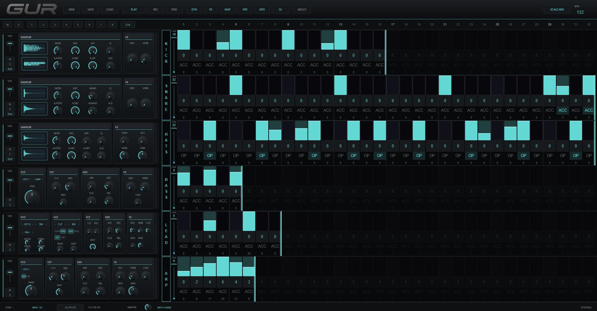
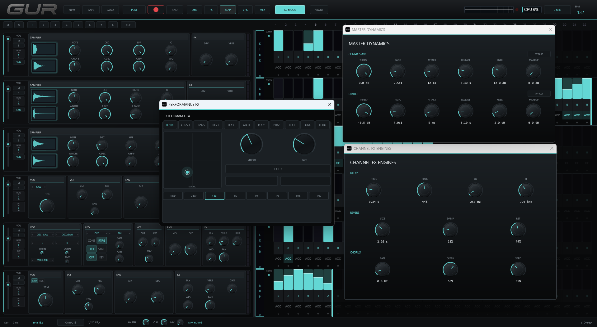
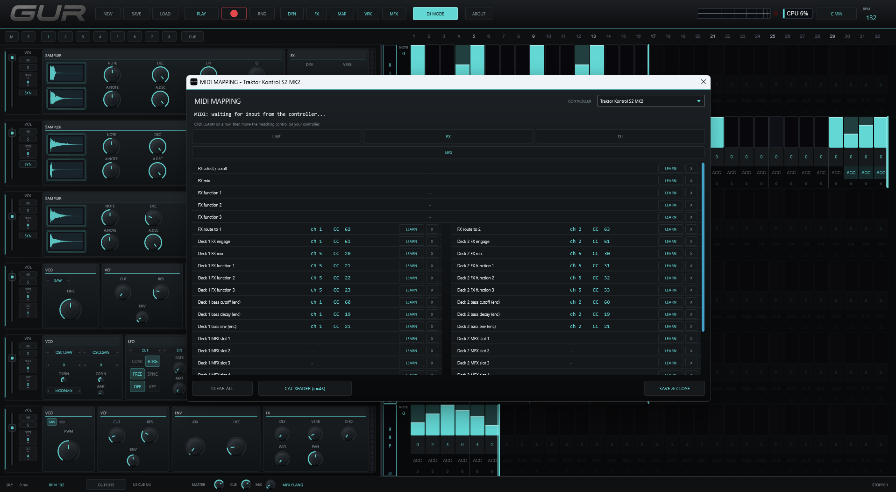
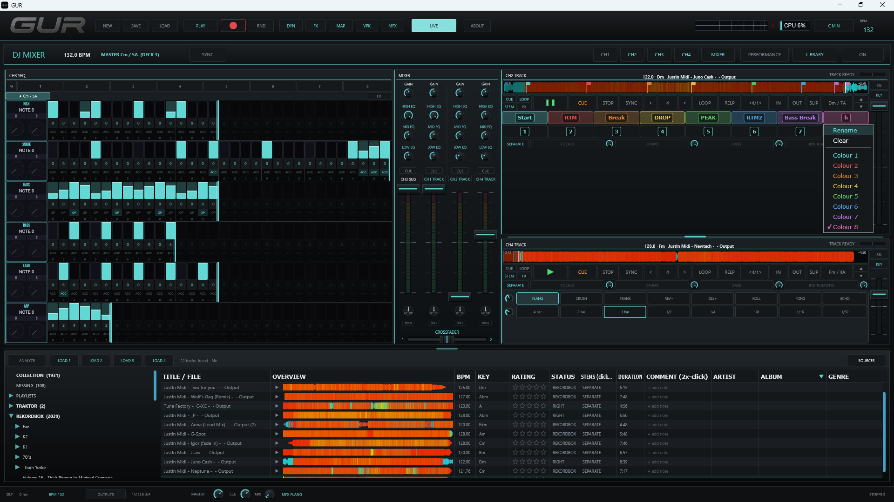
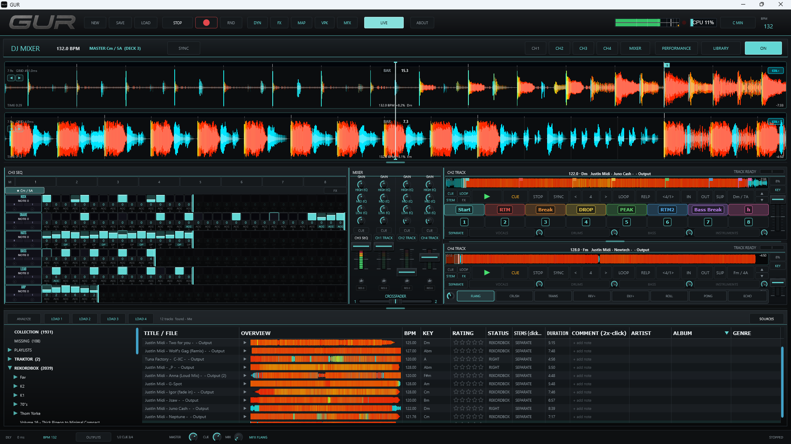
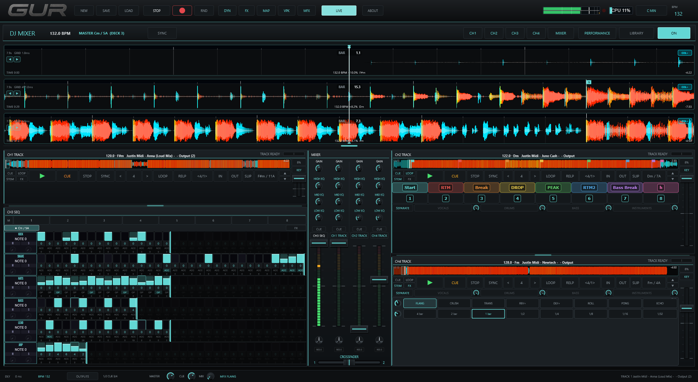

DJ LIVE SEQUENCER WORKSTATION
A complete instrument for live performance - 12 instruments, 8 live channels, four decks, insert FX, LiveFX and a sample-accurate sequencer. Standalone, or as a VST3 inside your DAW.
$129.99 from January 1. Buy during your 30-day trial and the 3 classic synths are yours free.
or hear it in your browser first
THE NATIVE APP
A glance. Standalone Windows / macOS, low-latency, ASIO + MIDI.






Open email with…
TRY IT IN YOUR BROWSER
The browser-based reference. Click LIVE inside the frame to start, then use the mixer and sequencer to build beats.
Press PLAY inside the frame to start audio. Best in Chrome / Edge / Firefox on desktop. The full native app adds low latency, ASIO and MIDI.
WHAT'S INSIDE
One instrument for the stage. Standalone on Windows and macOS, or as a VST3 inside your DAW.
POLYMETRIC SEQUENCER
Every channel runs its own 32-step grid with an independent loop length - layer polymeters and patterns that drift in and out of phase. Per-step velocity, accent, modulation, global swing, and sample-accurate timing.
EIGHT LIVE CHANNELS
GUR opens with all eight channels ready. Any slot can host any engine, so the rack fits the set you are playing.
GLOBAL OR CHANNEL PATTERNS
The pattern row can target the whole live set or one selected channel. Switch CH1-CH8 into focus, load or save a single channel pattern, then return to global mode for full-pattern changes.
256-BAR PIANO ROLL
Write long-form melodic parts inside the live sequencer - up to 256 bars per channel, with drawn note lengths, per-beat velocity, accent/open states, copied automation sections, and real-time read/write recording.
PERCUSSION SYNTH / SAMPLER
A flexible Percussion engine sits alongside Kick, Snare, Hats, Bass, Lead and the classics. Load it into any live channel slot.
FOUR FLEXIBLE DECKS
Four decks, each freely assignable - load a sequencer pattern or an audio track onto any of them. The full CDJ workflow, in software.
DJ LIBRARY & IMPORT
A built-in collection with playlists. Import straight from Traktor, Rekordbox and VirtualDJ - BPM, beatgrids, keys and hot cues come across - or read a live Rekordbox database directly.
HARMONIC KEY MIXING
Automatic musical / Camelot key per deck, with real transposition. Mix in key across sequencer and track decks, and shift any deck to match.
CDJ-GRADE LOOPS & CUES
Beat loops, manual loops and slip mode, plus 8 saved loops and 8 hot cues per deck - phase-locked to the sequencer with continuous beat-sync, and a direct route into LiveFX.
KEY-LOCK TIME-STRETCH
High-quality stretching keeps pitch locked while you ride the tempo - or unlock it for full vinyl-style pitch bends.
STEM SEPARATION
Offline 4-stem separation per track - vocals, drums, bass, other. Mute, solo, set the level of each stem and route any stem into LiveFX - all straight from the deck.
STUDIO-QUALITY EXPORT
Render your set to WAV, AIFF, FLAC, MP3 or AAC - at the right tempo and key, with full metadata. A faithful recording of exactly what you heard.
INSERT FX + LIVEFX
Two effect systems with two jobs: inserts shape each channel, LiveFX is what you play.
INSERT FX - 13 NATIVE EFFECTS, 8 SLOTS PER CHANNEL
The PRO MIXER gives every channel 8 insert slots, EQ, high-pass and low-pass filters, trim and pan. The suite covers compressor, limiter, flanger, phaser, crusher, trance gate, chorus, delay, ping-pong, echo, spring, plate and room. Each effect has its own editor with factory and user presets, A/B and undo. Inserts save with your patterns, reorder by drag and drop, and can be automated from the piano roll.
LIVEFX - THROW EFFECTS YOU PLAY
Hold a pad to throw flanger, phaser, crusher, trance gate, roll, beat-loop, glitch, delay, reverb, ping-pong or echo, plus filter sweeps. LiveFX stays locked to the beat and engages on the grid. A performance panel adds an XY pad, macro controls and HOLD. Sequencer channels, track decks and individual stems can all feed it, and it maps straight to your controller.
MADE TO BE PLAYED BY HAND
GUR maps by action, not by device type, so DJ gear, keyboards, pads and fader banks can all drive it.
THE FLAGSHIPS
GUR was developed hands-on with the flagship controllers of Native Instruments, Pioneer DJ, Akai and Novation, including jog wheels, touch strips, pad grids and LED feedback.
EVERY MAJOR BRAND
The built-in list has 177 devices in 8 categories, from Denon DJ, Numark, Rane, Reloop, Hercules, Allen & Heath, Arturia, Roland, Korg, Behringer, Elektron and more. A few flagships ship with ready-made mappings; the rest are mapped with MIDI Learn. Not on the list? Add your own.
SEVERAL AT ONCE
Each connected controller keeps its own mapping, so several can run together without colliding. Each device has its own profile, and GUR reconnects when you plug in.
Brand names are trademarks of their owners and do not imply endorsement.
WHAT GUR CONNECTS TO TODAY
GUR is a complete instrument on its own, and it already works with the rest of your setup.
YOUR DAW
GUR runs as a VST3 plugin inside your DAW, with Live Mode and host sync. The VST3 is included in every license.
YOUR LIBRARY
Import from Traktor, Rekordbox and VirtualDJ, with BPM, beatgrids, keys and hot cues.
YOUR FILES AND RIG
Export to WAV, AIFF, FLAC, MP3 or AAC. ASIO audio, separate line and cue outputs, and MIDI from any controller.
Not yet: GUR cannot host third-party plugins today, and its DAW tier, GUR PRO, is still in development. Both are on the roadmap below.
PRICING
One-time purchase. No subscription. All v1.x updates free.
LAUNCH PRICE
$129.99 from January 1
Buy within your trial: the 3 classic synths free
- Full standalone including DJ mode
- Four decks, track decks and stems
- VST3 plugin included
- All v1.x updates free
- 30-day full-featured trial
- Windows 10 / 11 + macOS
LAUNCH PRICE
$69.99 from January 1
- Live Mode standalone
- VST3 plugin included
- Sequencer, drums, synths and FX
- All v1.x updates free
- 30-day full-featured trial
- No DJ mode or decks
Available now · Windows & macOS
VALUE FOR MONEY
One one-time price for a sequencer instrument, 12 engines, four decks, stems, a pro mixer with inserts, LiveFX and a VST3.
| Software | Price |
|---|---|
| GUR DJ | $69.99 one-time, $129.99 from January 1 |
| Ableton Live 12 Standard | USD 349 one-time |
| Serato DJ Pro | $299 one-time, or $11.99 per month |
| rekordbox Creative | $15 per month, billed yearly |
Prices from each vendor's website on November 4, 2026. These products differ in scope, so compare what each one includes for your own use.
ROADMAP - RELEASING BY JANUARY 1, 2027
GUR is opening up. This is the list of what is being built. Everything here except the new GUR PRO tier is a free update for GUR DJ and GUR LITE owners.
1. GUR PRO - THE NEW DAW TIER
A new higher tier that adds a post-production timeline and audio channels, with take lanes, track freeze and stem export, to everything in GUR DJ. In development now. Priced as DAW software, price to be announced. GUR DJ owners get 50% off.
2. THIRD-PARTY VST3 EFFECTS
Load your own VST3 effects into PRO MIXER insert slots, next to the native suite.
3. MIDI CLOCK
Send and receive MIDI clock, so GUR can stay in time with hardware and other software.
4. MIDI FILE IMPORT AND EXPORT
Move patterns and piano-roll parts in and out of GUR.
5. MORE READY-MADE MAPPINGS
Default mappings for more flagship controllers, so more gear works on first plug-in.
After January 1: third-party VST3 instruments and Ableton Link. These have no date yet.
QUESTIONS
What is GUR?
GUR is a DJ Live Sequencer Workstation by 21st Century Artisan: a desktop instrument for Windows and macOS that combines a live sequencer, 12 instrument engines, four DJ decks and stem separation.
Does GUR support VST plugins?
GUR itself runs as a VST3 inside your DAW. It cannot load third-party plugins today. Hosting third-party VST3 effects is on the roadmap for release by January 1, 2027, as a free update.
Is GUR a closed ecosystem?
Today GUR includes its own instruments and effects and does not host third-party plugins. It does run in any VST3 DAW, imports Traktor, Rekordbox and VirtualDJ libraries, exports standard audio files and works with MIDI controllers from any brand. The roadmap above lists what opens it further.
Is GUR a DAW?
Not yet. GUR is a live performance instrument today. Its DAW tier, GUR PRO, is in development and on the roadmap for release by January 1, 2027. It adds a post-production timeline and audio channels and is priced as DAW software, with 50% off for GUR DJ owners.
Which MIDI controllers work with GUR?
GUR maps by action, so any MIDI controller can be mapped with MIDI Learn. It was developed with the flagships of Native Instruments, Pioneer DJ, Akai and Novation, and its list has 177 devices across the major brands.
How much does GUR cost?
GUR DJ is $69.99 and GUR LITE is $39.99 at launch pricing, rising to $129.99 and $69.99 from January 1. Both are one-time purchases with no subscription, all v1.x updates free and a 30-day full-featured trial. GUR PRO, the upcoming DAW tier, will be priced separately, with 50% off for GUR DJ owners.
PLATFORMS
21ST CENTURY ARTISAN
We build machines for the stage. Virtual and physical. Standalone, low-latency, tuned for live use. GUR is our debut.
Built by Nadav Hecht Drayson
contact@21stcenturyartisan.comBECOME A BETA TESTER
Beta testing is free. Apply, download GUR directly, and explore the complete instrument on your own rig.
Start immediately - after the short application, download the current Windows or macOS build directly from this site. Your full-featured 30-day trial begins automatically when you first open GUR. No coupon, checkout, or serial key required.
Direct Windows 10 / 11 and macOS download · 30-day trial